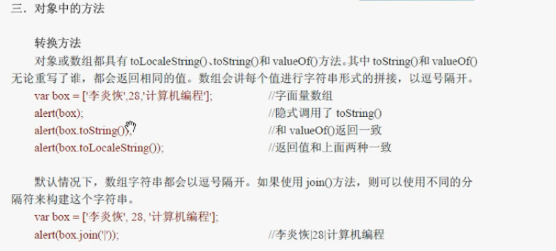
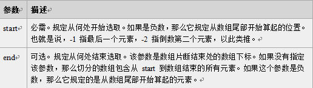
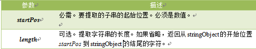
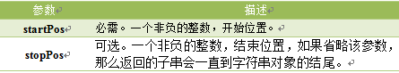

转换的方法：

原数组并不会发生改变
数组和字符串中方法总结
序号 | 方法名称 | 作用 | 改变原数组 | 语法 | 参数 | 返回值 |
1 | [...arr/str] | 将一个数组或字符串拆分别展开在数组里显示出来 | 否 | [...arrObject/stringObject] | 无 | 一串用逗号连接的数组,长度为原长度 |
2 | concat() | 用于连接俩个或多个数组,或用于字符串 | 否 | arrayObject/stringObject.concat(arr2,arr3) | 必须,可以是具体的值,也可是是数组对象 | 返回新链接后的数组/字符串 |
3 | slice() | 从已有的数组/字符串中返回选定的元素 | 否 | arrayObject/stringObject.slice(start,end) | start:必须,允许负数.end:可选,允许负数 | 返回选定的元素 |
4 | indexOf() | 查找字符串第一次出现的位置 | 否 | arrayObject/stringObject.indexOf(substr,statr) | substr:要查找的子字符串.start:可选,若不写或为负数则从0开始查找 | 返回子字符串第一次出现的位置,若写入RegExp返回-1 |
5 | lastIndexOf() | 从最后开始查找字符串第一次出现的位置 | 否 | arrayObject/stringObject.lastIndexOf(substr,statr) | substr:要查找的子字符串.start:可选,若不写或为负数则从0开始查找 | 返回子字符串第一次出现的位置,若写入RegExp返回-1 |
6 | join() | 把数组中的所有元素放入一个字符串,通过指定分隔符进行分隔 | 否 | arrayObject.join("-") 若("")空则将array=>string | 可选,若无使用逗号分隔 | 返回一个字符串,这个字符串是用指定的分隔符分隔了的 |
7 | splice() | 在数组中添加/删除/替换元素 | 是 | arrayObject.splice(start,length,newElement) | start:必须,允许负数.length:必须,可为0.newElement:可选 | 一个新的数组 |
8 | push() | 从数组尾部插入一个或多个元素 | 是 | arrayObject.push(newElement1,newElement2) | 新的字符串(空字符也算字符并占数组长度) | 新的数组的长度 |
9 | pop() | 删除并返回出数组的最后一个元素 | 是 | arrayObject.pop() | 无 | 数组最后的一个元素(若为空数组,返回undefined) |
10 | unshift() | 从数组的头部添加一个或多个元素 | 是 | arrayObject.unshift(newElement1,newElement2) | 新的字符串(空字符也算字符并占数组长度) | 新的数组的长度 |
11 | shift() | 移出数组中的第一个元素 | 是 | arrayObject.shift() | 无 | 数组第一个元素(若为空数组,返回undefined) |
12 | reverse() | 将数组中的所有元素倒叙 | 是 | arrayObject.reverse() | 无 | 一个新的数组 |
13 | sort() | 对数组中的元素进行排序 | 是 | arrayObject.sort(sortby) | 一个函数,决定排序的方式 | 一个新的数组 |
14 | toString() | 把数组转为字符串并用,分隔开 | 是 | arrayObject.toString() | 无 | 一串用,分隔开的字符串(,也是其中的元素) |
15 | substr() | 在字符串中抽取从start下标开始的指定数目的字符 | 否 | stringObject.substr(start,length) | statr允许负数,length可选(若无则截取最大长度,为负数则为0) | 一个新的字符串 |
16 | substring() | 在字符串中抽取从start下标开始到指定下标的字符串 | 否 | stringObject.substring(start,end) | start非负数(如为负数,则当成0来用),end可选,非负数(若为负数则和start交换再执行) | 一个新的字符串 |
17 | charAt() | 返回指定位置长度为1的字符串 | 否 | stringObject.charAt(index) | index范围0~str.length | 指定位置长度为一的字符串,index不在区间内返回空字符串 |
18 | charCodeAt() | 返回指定位置的字符的Unicode编码 | 否 | stringObject.charCodeAt(index) | index范围0~str.length | Unicode编码,index为负数或大于等于字符串长度,返回NaN |
19 | toUpperCase() | 将字符串中所有的字符都转为大写 | 否 | stringObject.toUpperCase() | 无
| 返回一串全是大写字母的字符串 |
20 | toLowerCase() | 将字符串中所有的字符都转为大写 | 否 | stringObject.toLowerCase() | 无 | 返回一串全是小写字母的字符串 |
21 | trim() | 去除字符串的首尾位空白 | 否 | stringObject.trim() | 无 | 返回一串首尾位没有空白符的字符串 |
22 | localeCompare() | 比较俩个字符串在字母表中的顺序 | 否 | stringObject.localeCompare(target) | 必需,要比较的字符串 | 若str>target返回正数;小于返回负数;相等返回0; |
23 | replace() | 在字符串中用一些字符替换另一些字符，或替换一个与正则表达式匹配的子串。 | 否 | stringObject.replace(regexp/substr,replacement); | 1.必需,需要替换的元素. 2.必需,新的元素 | 一个新的字符串 |
24 | match() | 检索在字符串内指定的值，或找到一个或多个正则表达式的匹配。 该方法类似 indexOf() 和 lastIndexOf()，但是它返回指定的值，而不是字符串的位置。 | 否 | stringObject.match(regexp/substr) | 必需,一个字符串或正则表达式相匹配的元素 | 存放匹配结果的数组, 若没找到匹配的数据,返回null |
25 | search() | 检索在字符串中指定的值,或找到一个或多个正则表达式的匹配 | 否 | stringObject.match(regexp/substr) | 必需,一个字符串或正则表达式相匹配的元素 | 返回子字符串或正则第一次出现的位置,若无,返回-1 |
26 | split() | 用于把一个字符串分隔成字符串数组 | 否 | stringObject.split(str/RegExp,len) | 字符串或正则表达式,len切割的最大长度 | 一个字符串数组(不包含分隔的字符串或正则本身) |
2.增删改(栈方法)
栈方法
push() 和pop()
后进先出，最后进去的元素最先出来FILO (先进后出) ；
通过push()方法给数组添加一个元素或者多个元素，再通过pop()方法移出最后的元素；
pop()方法时,如果数组已经为空，则 pop() 不改变数组，并返回 undefined 值。
var box = ['王先生',22,'上饶']
alert(box.push('德兴','男')); //给数组末尾添加了N个元素，并返回数组最新长度；
alert(box);
=>5 =>王先生，22，上饶，德兴,男
var box = ['王先生',22,'上饶']
alert(box.push('德兴'));
alert(box);
alert(box.pop()); //移除数组最后的元素，并且返回移除的元素；
alert(box);
=> 4 =>王先生，22，上饶，德兴 =>德兴 =>王先生，22，上饶
3.队列方法
shift()
先进先出，最先进去的元素最先出来 特点：FIFO(先进先出)；
给数组的末端加入元素，从数组的前端移出元素
通过push()方法给数组添加一个元素，再通过shift()方法移出第一个的元素；
var box = ['王先生',22,'上饶']
alert(box.push('德兴')); //给数组末尾添加了N个元素，并返回数组最新长度；
alert(box);
=>4 =>王先生，22，上饶，德兴
var box = ['王先生',22,'上饶']
alert(box.push('德兴'));
alert(box);
alert(box.shift()); //移除数组第一个元素，并且返回移除的元素；
alert(box);
=> 4 =>王先生，22，上饶，德兴 =>王先生 =>22，上饶，德兴
4.unshift()
给前端添加一个元素，并且返回最新的长度；
var box = ['王先生',22,'上饶'];
alert(box.unshift('德兴'));
alert(box);
=>4 => 德兴，王先生，22，上饶
注：对于IE浏览器 ，总返回undefined ,而不是数组新长度
5.重排序方法
逆向排序reverse() 和 从小到大排序sort()
reverse()
var box = [1,2,3,4,5];
alert(box.reverse()); //逆向排序，返回排序后的数组；
alert(box);
=>5,4,3,2,1 =>5,4,3,2,1 原数组也被逆向排序了，说明是引用
sort()
例1：
var box = [5,4,3,2,1];
alert(box.sort()); //从小到大排序，返回排序后的数组；
alert(box);
=>1,2,3,4,5 =>1,2,3,4,5 //原数组也被逆向排序了，说明是引用
例2：
var box = [0,1,5,10,15];
alert(box.sort());
alert(box.reverse());
=>0,1,10,15,5 => 5,15,10,5,1,0
语法: arrayObject.sort(方法函数);
如果没有指定方法函数,则直接就按unicod的码排序用,
若有 方法函数,就按方法函数所指定的排序方法排序;
arrayObject.sort(Math.method);
注意: 该函数要比较两个值，然后返回一个用于说明这两个值的相对顺序的数字。比较函数应该具有两个参数 a 和 b，其返回值如下：
若返回值<=-1，则表示 A 在排序后的序列中出现在 B 之前。
若返回值>-1 && <1，则表示 A 和 B 具有相同的排序顺序。
若返回值>=1，则表示 A 在排序后的序列中出现在 B 之后。
如下俩个例,指定方法函数 compare() 从小到大或从大到小;
例3：
function compare(n,m){
return n-m; //从小到大,若要从大到小,也可以 m-n;
}
var box = [0,1,5,10,15];
alert(box.sort(compare)); //正向排序
alert(box.reverse()); //正向排序之后，再用逆向排序，就可以达到从大到小的效果；
=> 0,1,5,10,15 => 15,10,5,1,0
还可以按照数组内字符串的长度进行比较;
var box = ['qew','qwer','q','sdfd','qowpelk'];
alert(box.sort(compare));
function compare(a,b){
return a.length-b.length;
}
=>//字符串长度长的在后面
可以利用随机数的配合达到打乱数组的效果
var arr= [1,2,3,4,5,6,7,8];
function upset(arr){
arr.sort(campare);
function campare(a,b){
return 0.5-Math.random() ;
}
return arr;
}
alert(upset(arr));
6.操作方法
1.concat()
基于数组1，再创建一个比数组1多N个或者少了N个元素的数组2；
var box1 = [1,2,3,4];
var box2 = box1.concat(5); //创建新数组，并添加新元素
alert(box2); //输出新数组
alert(box1); //当前数组1并没有变化
=> 1,2,3,4，5 =>1,2,3,4
也可以用于数组链接;
var box1 = [1,2,3,4];
var box2 = [5,6,7,8];
var box3 = box1.concat(box2); //直接讲数组二添加到数组一后面
alert(box3); //输出新数组
alert(box1); //原数组没有改变
=> 1,2,3,4,5,6,7,8 => 1,2,3,4
2.slice()
基于数组1，获取指定区域元素并创建一个新数组2；
(只允许从前往后切,不允许从后往前,即end 要大于 start)
arrayObject.slice(start,end);

var box1 = [1,2,3,4,5];
var box2 = box1.slice(1); //指定从数组1的第一个位置（也就是2）开始；
alert(box2); //输出新数组；
alert(box1); //当前数组1没有变化；
=>2,3,4，5 => 1,2,3,4，5
若是
var box2 = box1.slice(1,3); //指定从数组1的第一个位置（也就是2）开始，到第三个位置（也就是4，不包裹4）结束；
=> 2,3
注意：
1. 可使用负值从数组的尾部选取元素。
2.如果 end 未被规定，那么 slice() 方法会选取从 start 到数组结尾的所有元素。
3. String.slice() 与 Array.slice() 相似。
若 start 和 end 都没写,则复制一份原数组
var box2 = box1.slice();
3.splice()
splice()方法与concat()和slice()都不同，它会对原始数组产生改变；
1.splice()中的删除功能：
var box1 = [1,2,3,4,5];
var box2 = box1.splice(1,3); //指定从数组1的第一个位置（也就是2）开始，取3个元素（与slice不同）;
alert(box2); //输出新数组（被切了的元素为新数组）
alert(box1); //将原数组中的234删除，并返回（与concat和slice都不同）
=> 2,3,4 =>1,5
2.splice()中的插入功能：
var box2 = box1.splice(1,0,6); //指定从数组1的第一个位置（也就是2之前）开始，截取0个元素，并插入元素6；
alert(box2); //输出被切了的元素
alert(box1); //输出操作过后的数组1
=> 空 =>1,6,2,3,4,5
3.splice()中的替换功能：
var box2 = box1.splice(1,1,6); //指定从数组1的第一个位置（也就是2）开始，截取1个元素，并替换成元素6；
alert(box2); //输出被切了的元素
alert(box1); //输出操作过后的数组1
=> 2 =>1,6,3,4,5
4.join()
join()方法用于把数组中的所有元素放入一个字符串。元素是通过指定的分隔符进行分隔的。
我们将使用分隔符来分隔数组中的元素，代码如下：
<script type="text/javascript">
var myarr = new Array(3)
myarr[0] = "I";
myarr[1] = "love";
myarr[2] = "JavaScript";
document.write(myarr.join("."));
</script>
运行结果：
5.split();
字符串分隔;
stringObject.split(separator,limit);
语法:将一串字符串从指定位置以指定符号或者字符,正则表达式分隔为一个字符串数组;
返回的是一个字符串数组,该数组内不包含指定符号或者字符,正则;
注意：如果把空字符串 ("") 用作 separator，那么 stringObject 中的每个字符之间都会被分割。
例1:
var scoreStr = "小明:87;小花:81;小红:97;小天:76;小张:74;小小:94;小西:90;小伍:76;小迪:64;小曼:76";
var score1 = scoreStr.split(";"); //分隔为"名字:分数"的形式;
alert(score1);
=>小明:87 小花:81 小红:97 小天:76 小张:74 小小:94 小西:90 小伍:76 小迪:64 小曼:76
例2:
var array = ["Hellow! World!"];
alert(array.split("")); //每个字符之间都被分隔;
alert(array.split("",5)); //每个字符之间都被分隔,并定义分隔次数;
alert(array);
=> H,e,l,l,o,w,!,W,o,r,l,d,! => H,e,l,l,o =>Hellow! World!
6.substr();
提取字符串;
stringObject.substr(startPos,length);
语法:提取开始的位置(下标), 提取字符的长度;

注意：如果参数startPos是负数，从字符串的尾部开始算起的位置。也就是说，-1 指字符串中最后一个字符，-2 指倒数第二个字符，以此类推。
如果startPos为负数且绝对值大于字符串长度，startPos为0。
例:
var array = [1,2,3,4,5];
alert(array.substr(1,3)); //从下标为1(也就是2)开始提取,3个字符
alert(array.substr(1)); //省略长度,则一直到结尾;
alert(array); //提取完之后对原数组没有影响;
=>2,3,4 =>2,3,4,5 =>1,2,3,4,5
7.substring();
提取字符串;
array.substring(startPos,stopPos);
语法:提取开始的位置(数组的下标),到结束的位置(数组的下标)的字符;

注意：
1. 返回的内容是从 start开始(包含start位置的字符)到 stop-1 处的所有字符，其长度为 stop 减start。
2. 如果参数 start 与 stop 相等，那么该方法返回的就是一个空串（即长度为 0 的字符串）。
3. 如果 start 比 stop 大，那么该方法在提取子串之前会先交换这两个参数。
例:
var array = [1,2,3,4,5,6];
alert(array.substring(1,4); //提取从下标为1(也就是2)到下标为4(也就是5)的字符串;
alert(array.substring(1)); //提取从下标为1(也就是2)到结尾的字符串;
alert(array); //原数组不改变;
=> 2,3,4,5 =>2,3,4,5,6 =>1,2,3,4,5,6
8.toString()
把数组转换为字符串并且用,隔开;